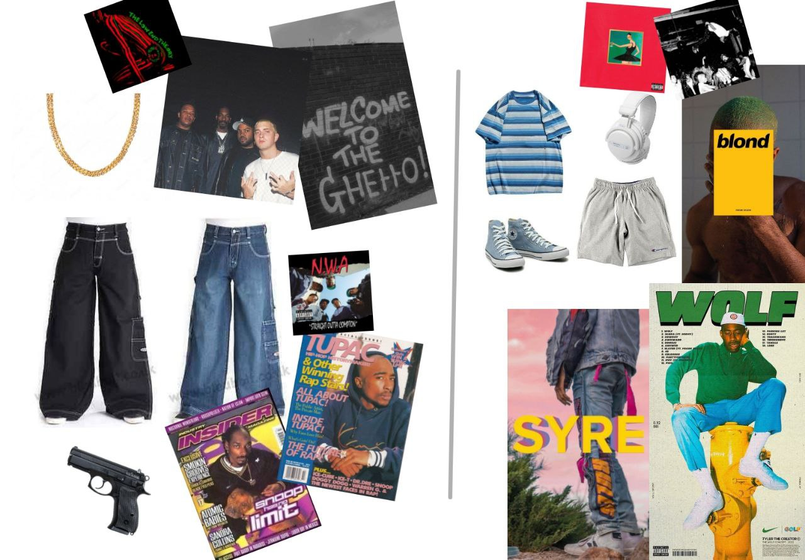

В этом году культуре репа исполняется 50 лет, однако скачок в развитии субкультура получила в 1981 году после первого реп-баттла (реп-баттл простым языком - битва двух людей, где победа распределяется тем, кто ритмичнее и складнее зачитает свою часть).Целиком и полностью первоночально в этой культуре были темнокожие афроамериканцы, но в последствии эта культура получила много этнических и жанровых ответвлений(так как вся субкультура строится на жанре репа),а основным досугом репер тогда стали реп-баттлы и клубные реп-тусовки. По сей день эта субкультура жива, и вклад в нее представителей нашей страны неожиданно велик (в отличии от прошлых субкультур). Главными фигурами зарубежного репа в наше время являются Канье Вест, Кендрик Ламар, Drake, Lil Uzi Vert, Playboi Carti; а отечественного репа - LOV66, kizaru, SODA LUV, Noize MC.
День, когда реп стал репом
Человек, менявший представление и направления всей реп-культуры